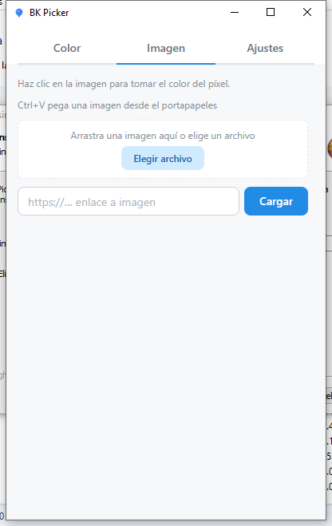
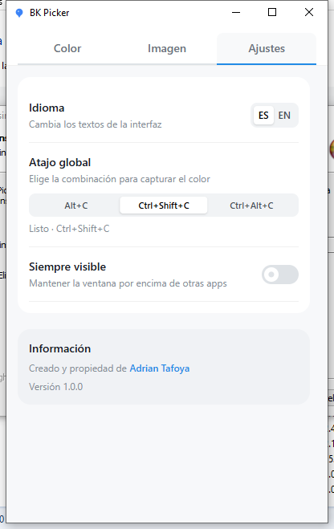

Screen eyedropper
Pick any pixel on screen with a loupe preview. Global shortcut ready when the app is in the background.
Windows · Tauri · Ink Surface
Capture screen colors, copy modern CSS formats, and match Tailwind, Material, CSS, and Bootstrap tokens — in a native desktop app that stays out of your way.
Built for the moment between inspiration and implementation — when you need the right token, format, and contrast without leaving your flow.
Pick any pixel on screen with a loupe preview. Global shortcut ready when the app is in the background.
Copy HEX, HEX+A, RGB, HSL, modern HSL, and OKLCH — formatted for paste into code, design tokens, or stylesheets.
Keep recent captures close. Pin favorites, search, and export as CSS variables or JSON.
See the closest Tailwind, Material, CSS named, and Bootstrap tokens with ΔE distance — pick the variant that fits.
Complementary, analogous, and triadic sets derived from your active color — activate and copy in one tap.
Instant WCAG AA/AAA feedback against white and black so readable UI choices stay intentional.
The workspace keeps your color in focus while capture modes, equivalences, and palettes stay one tab away.

Eyedropper, manual HSB, or image sampling — then copy the format your stack expects without reformatting by hand.

Drop a file, paste from the clipboard, or load a URL. Click any pixel to activate and copy the color instantly.

Language, global shortcut presets, and always-on-top — small controls that keep BK Picker feeling native on Windows.
Lightweight Tauri shell, WebView2 on Windows, and a workflow that respects how you actually ship UI.
// From BK Picker → your stylesheet
--brand: oklch(62% 0.19 255);
.btn {
background: bg-blue-500;
}Get the latest Windows build from GitHub Releases — NSIS setup or MSI. WebView2 is required (most systems already have it).
Prefer MSI for managed installs · EXE setup for quick personal use